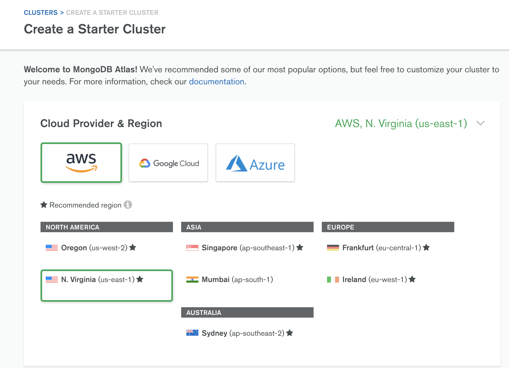
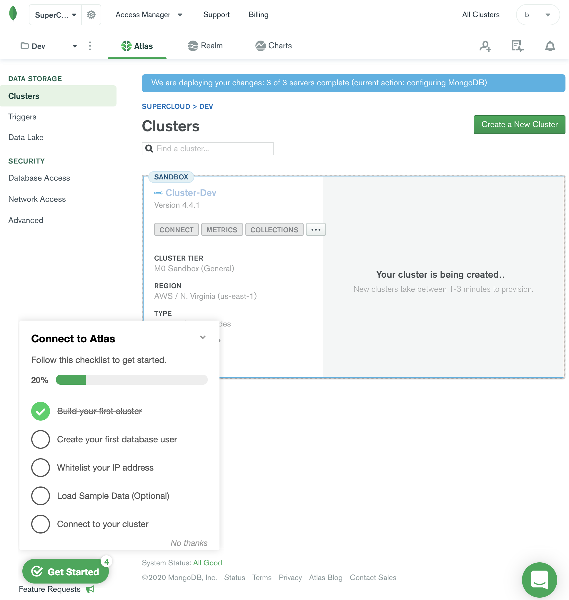
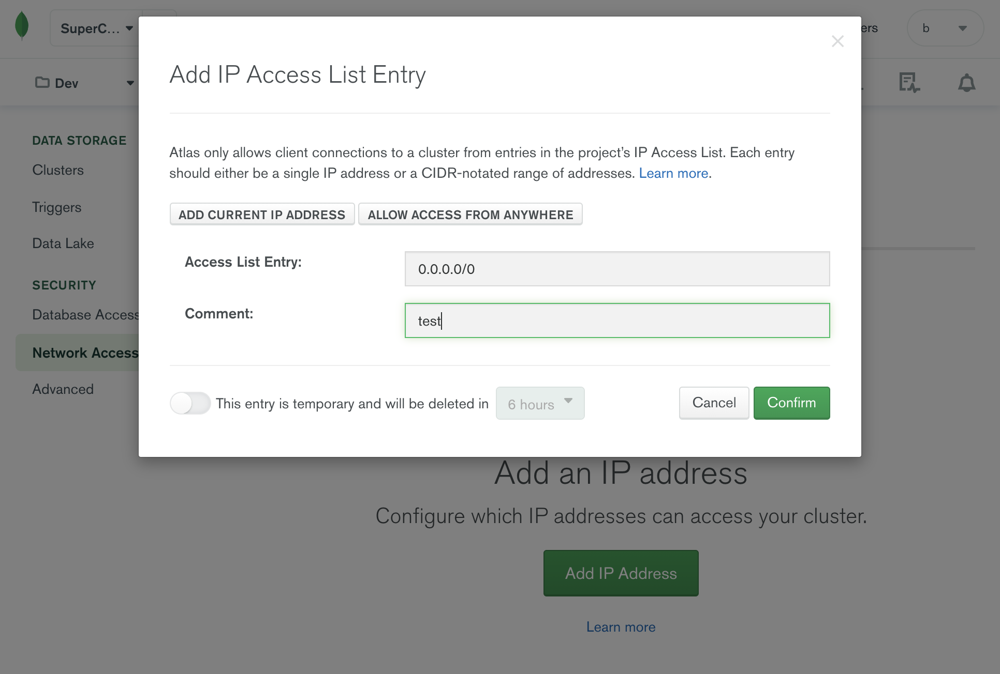
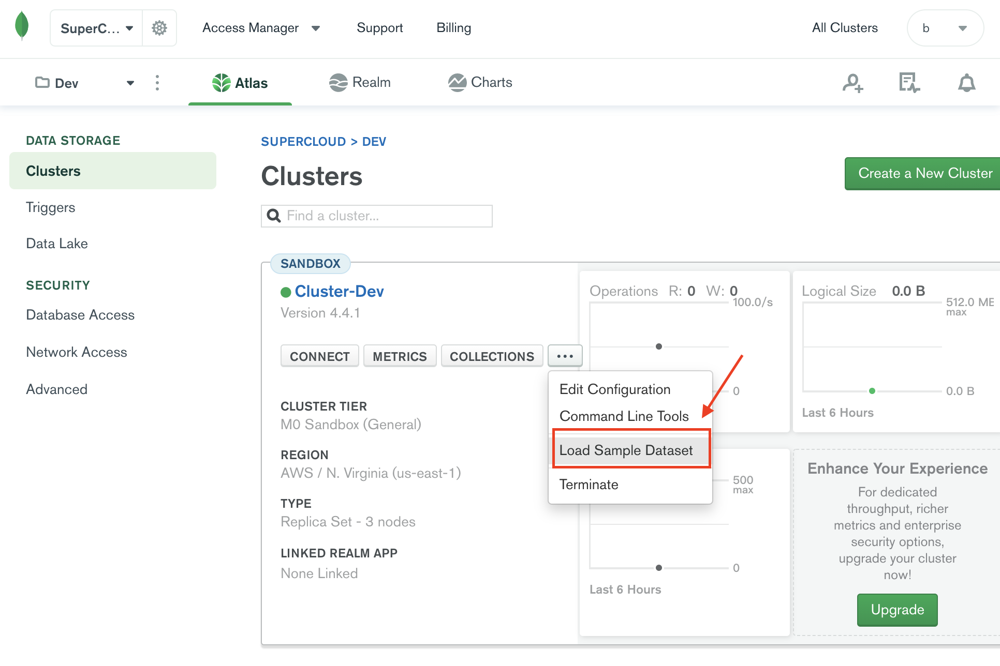
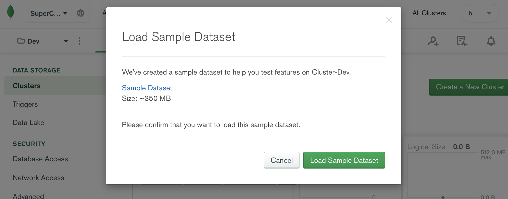
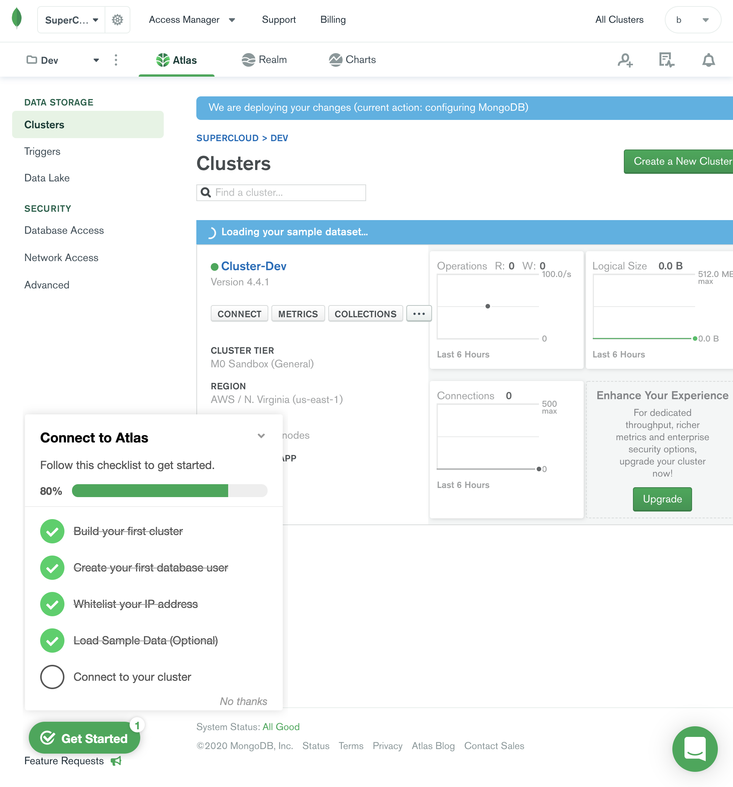
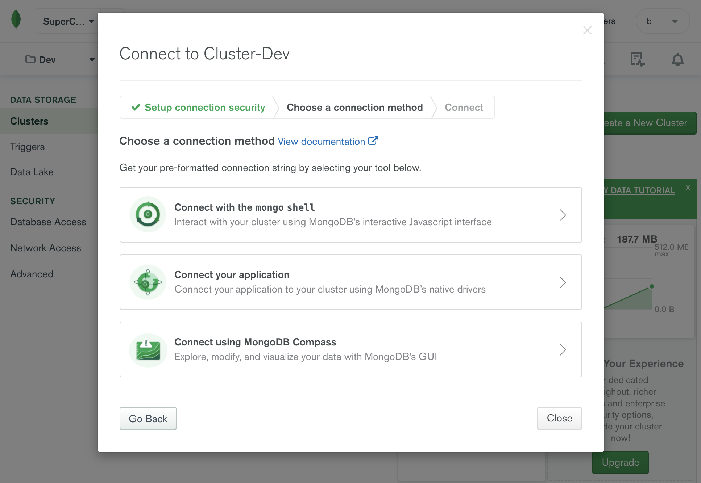

Overview MongoDB Atlas provides an easy way to host and manage your data in the cloud. This tutorial guides you through creating an Atlas cluster, connecting to it, inserting data, and querying data.
Table of Contents
Practice 创建免费的集群 
创建账号 
创建白名单 
导入测试数据 


连接集群 
user@B01202010002-33 ~ % brew install mongodb/brew/mongodb-community-shell Updating Homebrew... ==> Downloading https://homebrew.bintray.com/bottles-portable-ruby/portable-ruby-2.6.3_2.yosemite.bottle.tar.gz ==> Pouring portable-ruby-2.6.3_2.yosemite.bottle.tar.gz ==> Auto-updated Homebrew! Updated 1 tap (homebrew/core). ==> New Formulae attr aws-console duf heppdt2 inframap kubevela oakc terracognita vc wayland xcinfo ==> Updated Formulae Updated 998 formulae. ==> Deleted Formulae dtrx unrar ==> Tapping mongodb/brew Cloning into '/usr/local/Homebrew/Library/Taps/mongodb/homebrew-brew' ... remote: Enumerating objects: 130, done . remote: Counting objects: 100% (130/130), done . remote: Compressing objects: 100% (107/107), done . remote: Total 495 (delta 53), reused 57 (delta 23), pack-reused 365 Receiving objects: 100% (495/495), 108.38 KiB | 221.00 KiB/s, done . Resolving deltas: 100% (222/222), done . Tapped 11 formulae (39 files, 180.8KB). ==> Installing mongodb-community-shell from mongodb/brew ==> Downloading https://fastdl.mongodb.org/osx/mongodb-shell-macos-x86_64-4.2.0.tgz 🍺 /usr/local/Cellar/mongodb-community-shell/4.2.0: 8 files, 45MB, built in 2 seconds user@B01202010002-33 ~ % which mongo /usr/local/bin/mongo user@B01202010002-33 ~ % mongo --version MongoDB shell version v4.2.0 git version: a4b751dcf51dd249c5865812b390cfd1c0129c30 allocator: system modules: none build environment: distarch: x86_64 target_arch: x86_64 user@B01202010002-33 ~ % mongo "mongodb+srv://xxx/admin" --username booboo MongoDB shell version v4.2.0 Enter password: MongoDB Enterprise atlas-7vhhkd-shard-0:PRIMARY> db admin MongoDB Enterprise atlas-7vhhkd-shard-0:PRIMARY> show dbs admin 0.000GB local 4.063GBsample_airbnb 0.051GB sample_analytics 0.009GB sample_geospatial 0.001GB sample_mflix 0.040GB sample_restaurants 0.007GB sample_supplies 0.001GB sample_training 0.043GB sample_weatherdata 0.002GB
拓展阅读